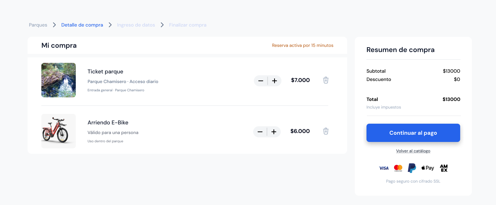
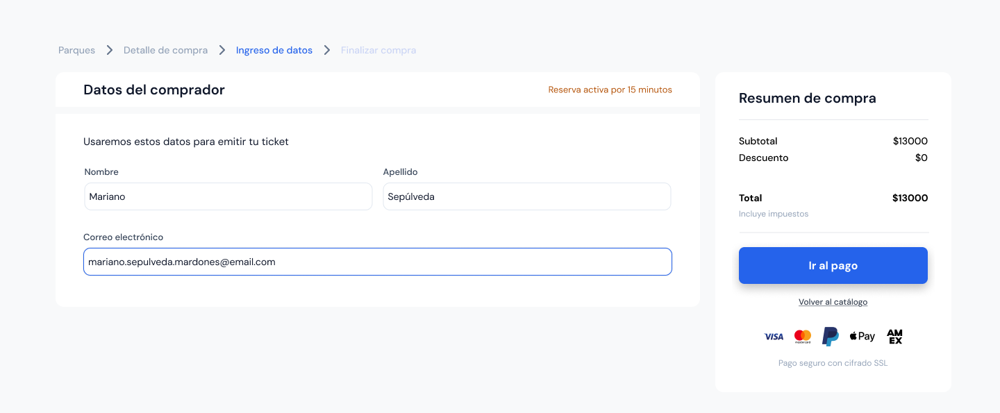
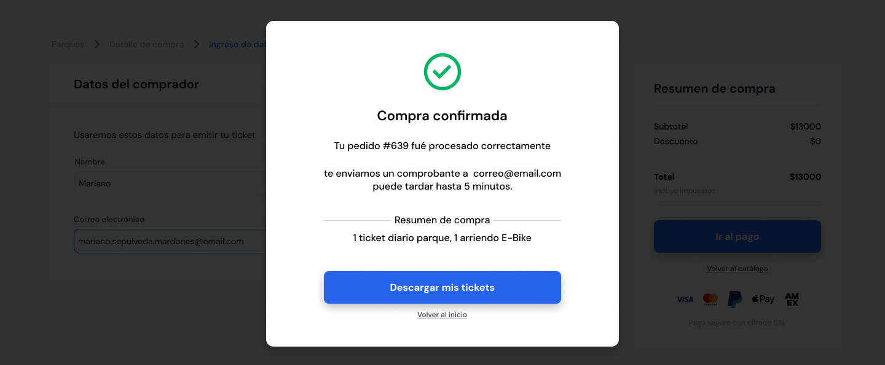
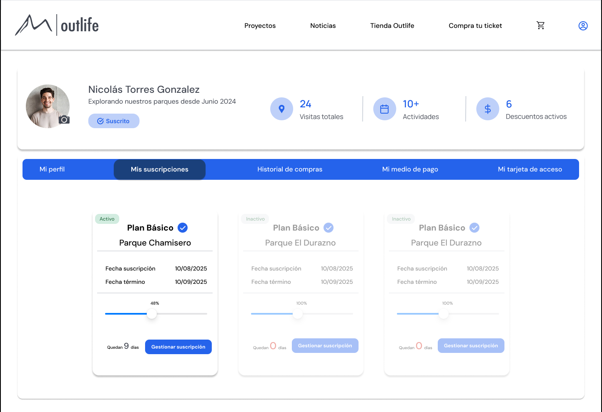

Resumen ejecutivo
Outlife enfrentaba un problema operativo y de experiencia: el checkout generaba confusión en los usuarios, lo que derivaba en un alto volumen de contactos a soporte para completar compras. Esto sobrecargaba a un equipo reducido y terminaba afectando la conversión.
Checkout
Reestructuré el flujo como una secuencia guiada, haciendo explícita la progresión y separando contenido y resumen para reducir la carga cognitiva en decisiones clave.
Perfil
Transformé el perfil desde una vista administrativa a un espacio activo con historial, tickets y señales de uso, orientado a aumentar autonomía y recurrencia.
Sistema
Aseguré consistencia con el sistema visual existente, adaptándolo a un contexto transaccional sin perder claridad ni jerarquía en el flujo.
Tras la implementación, se redujo significativamente la dependencia de soporte en el proceso de compra y aumentó el uso del perfil como punto de interacción post-compra, validando una mejora tanto en eficiencia operativa como en experiencia de usuario.
El desafío
El reto no era solo rediseñar la interfaz, sino reducir la dependencia de soporte en el proceso de compra sin afectar tiempos de implementación ni consistencia con el sistema existente.
El checkout existente generaba fricción porque no hacía visible el paso a paso ni diferenciaba correctamente los bloques de información. Esto obligaba a los usuarios a interpretar el flujo por sí mismos o recurrir a soporte para completar la compra.
En paralelo, el perfil de usuario no extendía la experiencia más allá de la transacción: estaba limitado a datos básicos e historial, sin aportar valor en términos de seguimiento, recurrencia o relación con la marca.
La oportunidad no era solo mejorar usabilidad, sino resolver un problema operativo: disminuir la carga sobre soporte mediante un flujo más claro y autónomo para el usuario.
El proyecto debía resolverse en un plazo acotado, con decisiones alineadas a negocio y validadas con stakeholders, manteniendo coherencia con un sistema visual ya definido y sin afectar la velocidad de implementación.
Investigación y enfoque
La propuesta se estructuró a partir de un diagnóstico del flujo actual, complementado con benchmark, exploración estructural y validación continua con stakeholders.
Evaluación del flujo
Apliqué heurísticas de usabilidad para detectar problemas en jerarquía, visibilidad del sistema y control del usuario dentro del flujo de compra.
Benchmark
Analicé patrones de checkout en plataformas comparables para validar estructuras de progresión, resumen y reducción de fricción en decisiones críticas.
Wireframes
Definí wireframes en low fidelity para iterar rápidamente sobre estructura, priorización de contenido y secuencia del flujo antes de trabajar la capa visual.
User personas
Construidos a partir de datos reales del negocio para reflejar distintos niveles de familiaridad digital, necesidades de claridad y contextos de uso.
Iteración
Iteración continua con líder de proyecto basada en datos de comportamiento y feedback de soporte, validando decisiones con stakeholders antes de implementación.
Implementación
Acompañé la implementación realizando Design QA, documentando flujos implementados y detectando desviaciones. Generé incidencias con ID, nivel de urgencia y referencia directa a Figma para asegurar consistencia con el diseño definido.
Usuarios objetivo
A partir de datos reales del negocio y observación de comportamiento, construí tres user personas que representaban distintos niveles de familiaridad digital y contextos de uso. Estos perfiles no solo definieron a quién diseñar, sino cómo: priorización de claridad en el flujo para usuarios con menor experiencia, reducción de pasos para usuarios frecuentes y refuerzo de señales de confianza en decisiones de compra.
Exploración temprana del checkout
Antes de definir la capa visual, trabajé en wireframes de baja fidelidad para resolver problemas estructurales del flujo: orden de información, jerarquía del resumen de compra y secuencia de acciones. Esta etapa permitió validar decisiones clave sin el sesgo visual y detectar puntos de fricción tempranos.


Checkout original: punto crítico de fricción
El checkout existente generaba fricción en puntos críticos del flujo: presentaba ambigüedad en precios, falta de jerarquía en el total y una progresión poco clara. El usuario debía interpretar qué pagar y cómo avanzar, lo que provocaba errores, abandono y una alta dependencia de soporte para completar la compra.

Flujo de checkout rediseñado
El rediseño del checkout se enfocó en resolver problemas críticos detectados en el flujo original: ambigüedad en precios, falta de progresión clara y desconexión entre información y acción. La nueva propuesta transforma el proceso en una secuencia guiada, donde cada paso reduce incertidumbre y facilita la toma de decisiones.
Estructura y contexto de compra
Se reorganiza el layout para resolver la baja jerarquía del checkout original, separando contenido y resumen. El resumen pasa a ser visible y persistente, eliminando la ambigüedad en el total y conectando directamente la información con la acción principal.

Ingreso progresivo de datos
Se introduce el ingreso de datos como un paso posterior para evitar la sobrecarga inicial detectada en el flujo original. Al dividir la interacción, se reduce la carga cognitiva y se minimizan errores en la toma de decisiones durante la compra.

Confirmación clara y persistente
Se reemplaza el feedback ambiguo del flujo original por una confirmación clara y persistente, con número de compra, resumen y próximos pasos. Esto elimina la incertidumbre post-compra y reduce la necesidad de validación a través de soporte.
Tras la implementación, se observó una disminución significativa en los contactos a soporte relacionados con el proceso de compra, validando que la nueva estructura reduce fricción, mejora la comprensión del flujo y permite mayor autonomía del usuario.
Perfil de usuario: de sección básica a espacio de fidelización
El perfil no debía limitarse a una vista administrativa de datos. La oportunidad era resolver la baja interacción detectada en este espacio, transformándolo en un punto activo de post-compra donde el usuario pudiera gestionar su historial, acceder a tickets y mantener una relación continua con la marca.


Iteración del perfil: de estructura administrativa a experiencia de engagement
Las primeras iteraciones resolvían la estructura funcional, pero mantenían una lógica administrativa que no incentivaba el uso. A partir de esto, trabajé en mejorar la jerarquía de información, incorporar navegación por tabs y agregar señales de uso y estado para transformar el perfil en un espacio más claro, navegable y orientado a la recurrencia.
La iteración del perfil se centró en resolver la baja interacción detectada, pasando de una estructura administrativa a una navegación que expone información clave y facilita el uso recurrente.


Decisiones clave de diseño
El proyecto se apoyó en un sistema visual ya construido para Outlife, pero adaptado a un contexto distinto: una experiencia pública de e-commerce. Las decisiones clave buscaron reducir fricción, reforzar continuidad visual y aumentar valor percibido tanto en compra como en post-compra.

Jerarquía del flujo
Hice explícita la progresión del flujo para eliminar la necesidad de interpretación del usuario, conectando cada paso con una acción clara y reduciendo la dependencia de soporte.

Diseño orientado a usuarios
Diseñé considerando distintos niveles de familiaridad digital, priorizando claridad en usuarios menos expertos y eficiencia en usuarios recurrentes dentro del mismo flujo.

Consistencia de marca
Adapté el sistema visual existente a un contexto transaccional, priorizando claridad y jerarquía por sobre consistencia estética cuando era necesario.
Restricciones del proyecto
Tiempo
El proyecto se desarrolló durante tres meses, en paralelo a otros frentes de diseño dentro del ecosistema Outlife.
Equipo
Yo era la única UX/UI del proyecto y gran parte de la iteración se coordinó de forma remota y asincrónica con el líder de proyecto.
Negocio
Las decisiones debían avanzar con rapidez, equilibrando criterios de marca, expectativas de gerencia y tiempos acotados de implementación.
Resultados
La propuesta fue iterada durante tres meses junto al líder de proyecto y validada con gerencia antes de su implementación. Más allá de una mejora visual, el rediseño resolvió fricciones críticas del flujo de compra y redefinió el perfil como un punto activo dentro de la experiencia del usuario.
Claridad
Se eliminó la ambigüedad en el flujo de compra mediante una progresión clara, mejor jerarquía del total y conexión directa entre información y acción.
Implementación
La implementación fue acompañada con Design QA, permitiendo detectar y corregir desviaciones en desarrollo mediante un sistema de incidencias priorizadas y trazabilidad con diseño.
Valor post-compra
El perfil pasó de ser una sección de bajo uso a un espacio activo, aumentando la interacción de los usuarios y fortaleciendo la relación post-compra con la marca.
El rediseño redujo significativamente la dependencia de soporte en el proceso de compra y mejoró la autonomía del usuario, validando que decisiones de jerarquía, progresión y claridad tienen impacto directo tanto en la experiencia como en la operación del negocio.
Próximos pasos
Medición del flujo
Profundizar en métricas del checkout como tasa de abandono por paso y tiempo de completación para detectar nuevos puntos de fricción.
Optimización de conversión
Testear variaciones en el resumen de compra y CTA para seguir reduciendo fricción en el momento de pago.
Evolución del perfil
Explorar nuevas funcionalidades en el perfil como recordatorios, recomendaciones o beneficios personalizados para aumentar recurrencia.
Aprendizaje clave
Este proyecto reforzó que en productos orientados a cliente final, la claridad del flujo tiene impacto directo en la operación del negocio. Más allá de la interfaz, diseñar implica reducir incertidumbre, facilitar decisiones y disminuir la dependencia de soporte mediante estructuras más explícitas y comprensibles.